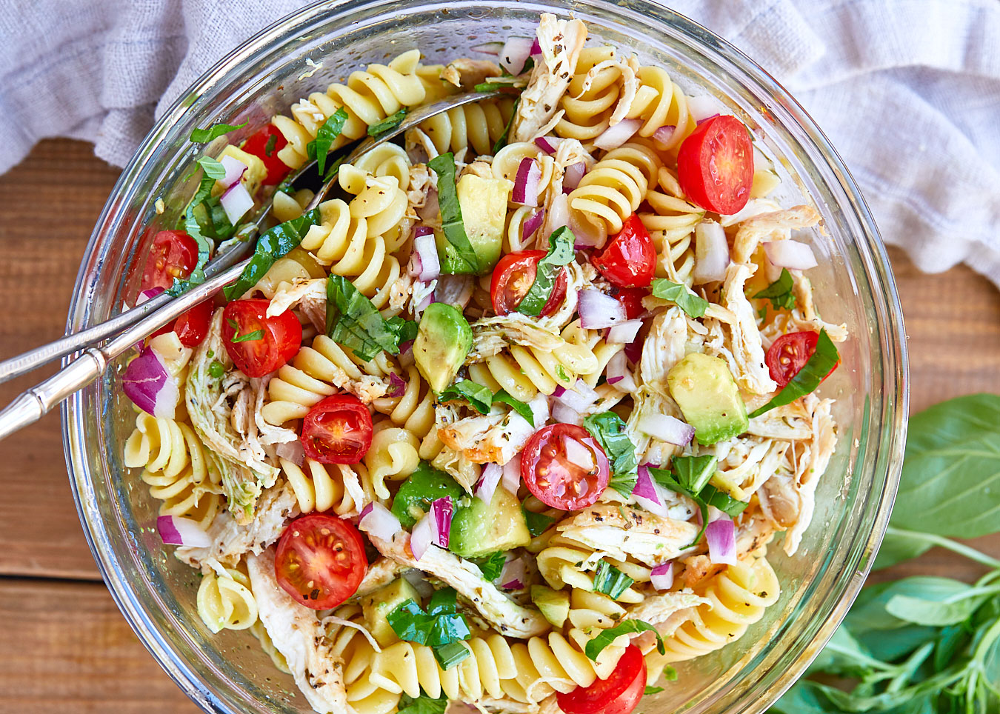

Healthy Chicken Pasta Salad

Details
With this recipe, we will make a quick, delicious, and healthy
pasta salad with chicken, avocado, tomato, and basil.
Ingredients
Pasta Salad
-
2 medium cooked chicken breasts, shredded
-
2 ripe avocado, pitted and diced
-
1 lb cooked rotini pasta or similar
-
1/2 cup chopped red onion
-
1 cup cherry tomatoes, halved
-
1/2 cup fresh chopped basil
-
Salt and fresh cracked black pepper, to taste
Dressing
-
1/2 cup white wine vinegar
-
1 tbls Italian seasoning
-
3/4 cup extra firgin olive oil
-
Salt and pepper to taste
Directions
-
In a large bowl, combine all the pasta salad ingredients.
-
In a jar, combine all the dressing ingredients. Shake jar
to mix.
-
Drizzle the pasta salad with the dressing and gently toss
the salad to mix. Enjoy!